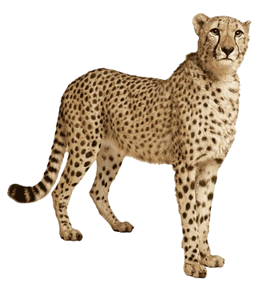
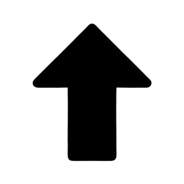

הברדלס דומה במבנהו לנמר, אלא שגופו רזה יותר, ראשו קטן יותר וחברבורותיו הן בצורת נקודות בצבע שחור, בשונה מחברבורותיו המעוגלות והטבעתיות של הנמר. אורך הגוף כ-135 ס"מ (ואורך הזנב 75 ס"מ) ומשקלו 40–65 ק"ג. הוא חתול בעל מבנה גוף המותאם לתנועה מהירה מאוד. הרגליים ארוכות ושריריות, הצוואר ארוך והזנב ארוך וגמיש, עוזר לתמרן בתנועה במהירות. הברדלס מנומר בדומה לנמר אך במקום חברבורות הוא מכוסה בנקודות שחורות על רקע פרווה צהובה. לברדלס לב וריאות גדולים יחסית אך ניבים ושיניים דקות יותר. המבנה שלו עוזר לו להאיץ במרדף אחרי טרפו אך פוגע בחוסנו ובחוזקו. נקבת הברדלס מגיעה לבגרות מינית בגיל 13–16 חודשים וההיריון שלה נמשך 3 חודשים. היא ממליטה 2–5 גורים בממוצע (לעיתים ממליטות עד 9 ולדות) ומניקה אותם במשך 90 יום. הזכרים והנקבות חיים ביחידות ואינם מתרועעים זה עם זה. עם זאת גורים שמתבגרים נשארים בשנים הראשונות יחדיו, כדי לטרוף ולהפיל טרף גדול מהם (כמו גנואים, יענים או זברות).
מאובני הברדלס העתיקים ביותר, שנמצאו במזרח אפריקה ובדרום אפריקה, מתוארכים ל-3 עד 3.5 מיליוני שנים. מאובני מתקופת הפליסטוקן מוקדמים נמצאו באתר אולדובאי שבצפון טנזניה ומתוארכים ללפני 1.7–1.85 מיליוני שנים.[5] חתולים דמויי ברדלס ידועים כבר לפני 10,000 שנים מהעולם הישן. הברדלס הענק (Acinonyx pardinensis), אשר היה גדול ואיטי משמעותית בהשוואה לברדלס המודרני, התקיים באירואסיה ובדרום ומזרח אפריקה בתקופת ה-Villafranchian (המיוחסת לתקופת הפליסטוקן המוקדם). בתקופת הפליסטוקן האמצעי נמצא ברדלס קטן יותר, העונה לשם A. intermedius,[6] אשר התקיים גם הוא באזורים שבין אירופה לאסיה.[7] כמו כן משערים את קיומו של ברדלס גדול יותר באזור אירופה אשר נכחד לפני כחצי מיליון שנה.[8] חתולים צפון אמריקאים נכחדים הדומים לברדלס שויכו באופן היסטורי לחתול מסוג לפליס, פומה או אקינוניקס (מין אחר של ברדלס). ניתוח פילוגנטי שנעשה בשנת 1990 הציב מינים אלה תחת המין Miracinonyx (ברדלס אמריקאי), שהפגינו מידה גבוהה של דמיון גופני לברדלס המודרני. עם זאת, מחקרים שנעשו לאחר מכן הראו כי ה-Miracinonyx קרוב יותר לפומה מאשר לברדלסים מודרניים. למעשה, ישנה מחלקות האם מין ה-Acinonyx התקיים אי פעם בצפון אמריקה; ייתכן שמיני Miracinonyx פיתחו תכונות דומות דרך אבולוציית התפתחות מקבילה.[9]
תחום מחייתו של הברדלס היה בעבר מהודו, לאורך חגורת המדבריות של המזרח התיכון ובכל רחבי אפריקה (למעט האזורים הטרופיים). בימינו השתנתה תפוצת הברדלס ללא היכר, כאשר באסיה נותרה אוכלוסייה שרידית בלבד ובאפריקה הפכו אזורים רבים שהברדלס חי בהם בעבר לחוות ענק, שהרסו את תחום מחייתו. עד ראשית המאה ה-20 היה הברדלס נפוץ גם במדינות ערב ובקדמת אסיה עד הודו. האוכלוסייה באסיה הושמדה כמעט כליל על ידי ציד לצורך לכידת גורי הברדלס ובשביל פרוותו היפה, וכן כתוצאה מירידה בכמות המזון העיקרית שלהם, בעקבות הצטמצמות אוכלוסיות הצבאים, שניצודו בידי האדם. לכידת גורים לצורך אילופם לציד צבאים (הברדלס ניתן לאילוף בקלות יחסית) כאמור גרמה לירידה דרסטית במספר הברדלסים, ועל כן שימש כחיית עזר לציד בהודו ובאיראן. כבר בתקופה הקדומה ניצודו גורי הברדלס כדי לאלפם למטרת סיוע בציד.
